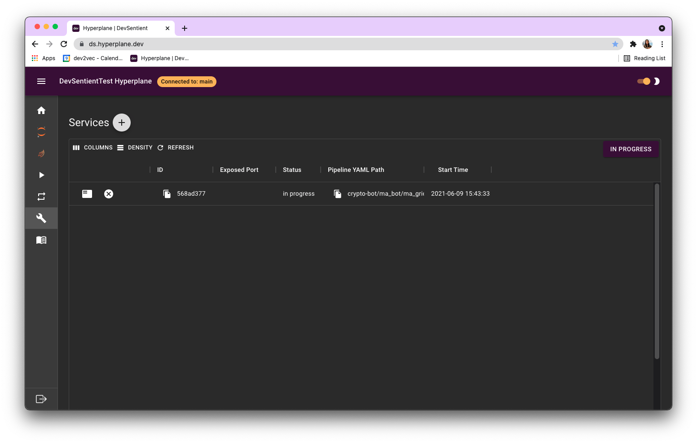
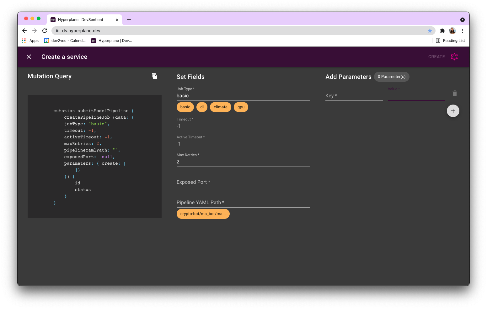
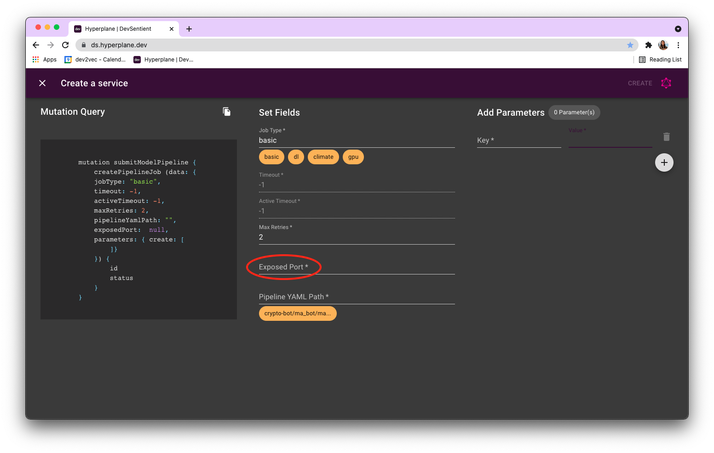

Create a service¶
In contrast to regular pipeline jobs, which are batch jobs or a series of steps that run end-to-end, you can create jobs from never-ending notebooks or scripts as services. Rather than running in your cluster, you can trigger this to run similar to a pipeline job on Shakudo Platform to run a continuous loop without having to keep your cluster up or your notebook running.
1. Prepare your code¶
Ensure your notebook or scripts can run without errors on your Jupyter instance. Alternatively, if you are using the pipeline to debug your runs, you can skip this step.
2. Create a pipeline yaml¶
Create a .yaml file to list your steps. You can start with adding the following template to example_pipeline.yaml:
pipeline:
name: "Example pipeline"
tasks:
- name: "First step"
type: "jupyter notebook"
notebook_path: "neverending_notebook.ipynb"
notebook_output_path: "neverending_notebook_output.ipynb"
- ...
You can replace the first step under tasks and add additional tasks following the same notation.
Add a Jupyter notebook step by adding the following block to your YAML:
- name: "[your_step_name]"
type: "jupyter notebook"
notebook_path: "[notebook/path/relative/to/top/level/of/repo.ipynb]"
notebook_output_path: "[some/notebook_output_name.ipynb]"
Add a Python/VSCode step by adding the following block to your yaml. The script should be runnable with python [py_path]:
- name: "[another_step_name]"
type: "vscode notebook"
py_path: "[py/file/relative/to/top/level/of/repo.py]"
Add a Javascript step by adding the following block to your YAML. The script should be runnable with node [js_path]:
- name: "[another_step_name]"
type: "js script"
js_path: "[js/file/relative/to/top/level/of/repo.js]"
Add a Bash script step by adding the following block to your YAML. The Bash script should be runnable with bash [bash_script_path]:
- name: "[another_step_name]"
type: "bash script"
bash_script_path: "[sh/file/relative/to/top/level/of/repo.sh]"
3. Set your timeouts to -1¶
Specify activeTimeout and timeout as -1 to indicate to Shakudo Platform that your job should not time out.
mutation submitModel {
createPipelineJob (data: {
jobType: "basic",
activeTimeout: -1,
timeout: -1,
pipelineYamlPath: "example_pipeline.yaml",
parameters: {create:
[
{key: "param1", value: "value1"}, ## change these for different experiments
]
}
}) {
id
runId
}
}
Alternatively, use the Services tab on the dashboard.  
4. (optional) Expose a port¶
If your neverending script requires an exposed port, be sure to expose it on host 0.0.0.0, port 8787. Then, include an exposed port in the job submission. 
5. (optional) Connecting to a service¶
Once your service is up and running you can connect to it from other jobs. To make this easier, Shakudo Platform's python package includes a helper function to find the current URL of any running service. Note that this is an internal URL and is only accessible from your other Shakudo Platform jobs - information regarding making a publicly accessible service is available here.
Importing and invoking the function:¶
from hyperplane import utils
URL_string = utils.get_service_url(name_or_id, input_type, check_exists, check_listening)
| Argument | Type | Description |
|---|---|---|
name_ or_id |
string, required |
The name or ID of the service in question. Service names are assigned by the user at job creation. IDs are Shakudo Platform's internal job labels, and take the form of a string of hexadecimal characters and dashes. |
input_ type |
string, optional, defaults to "auto" |
Specifies whether a name or ID has been supplied. Possible values: "auto" - function will automatically determine how to treat the input. "name" - assume the input is a service name (useful if you have named your service with the ID of another job or service for some reason). "id" - assume the input is a job ID. Any other string will fall back to auto-recognition. |
check_ exists |
boolean, optional, defaults to True |
If True the function will query Shakudo Platform's job database to ensure the service is running. Will raise an error if the service is not found. This test is necessary if name_or_id is a service name, and in that case values of False will be ignored. |
check_ listening |
boolean, optional, defaults to False |
If True the function will ensure that the service is listening on the expected port and URL. Will raise an error if it cannot connect to the service. May introduce a slight execution delay, depending on network environment. |
Return value:¶
The function returns a string containing the service URL, including port number